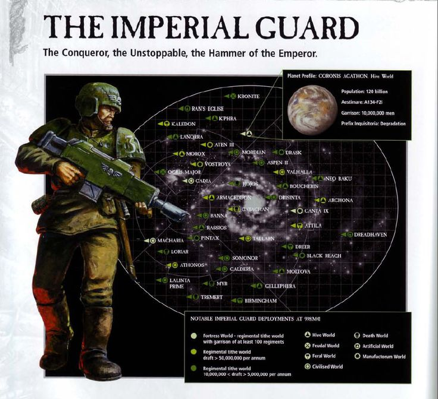

The Imperial Guard is the most numerous fighting force in the galaxy that is the Warhammer 40k universe. It is so massive in size that in universe (and out) it is utterly impossible to even attempt to determine it's size. There must be billions of guardsmen who are mustered into millions of regiments, each of them hailing from thousands of planets with individual cultures and fighting styles. The Guard masses its strength in numbers and overwhelming firepower, without the brave men and women that give their lives in these mass charges humanity would have certainly perished long ago. There is a million and one things that could be said about the Imperial Guard here, but I am simply here to give the cliff notes and let you sort out the rest...there will be a link down below...you can read as much as you want. The main focus of the following pages is to showcase the vast possibilities for fan regiments to be formed. In fact, describing those to you will make the bulk of my time spent on these pages...so let us see the locations of these regiments overlayed on a map of our Milky Way galaxy...nearly thirty thousand years into the future.
